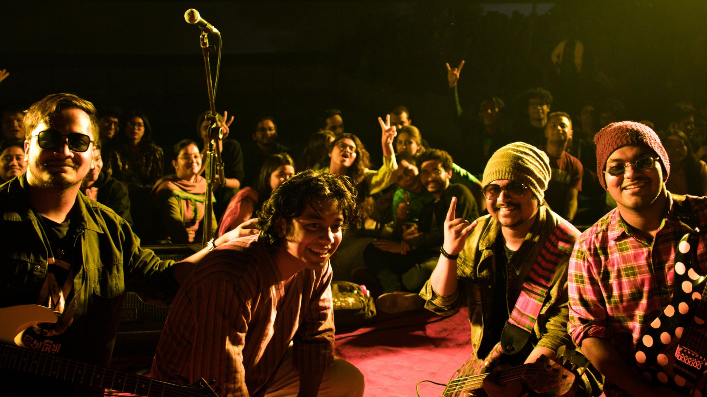

Nivaniya
A Symphonic/melo rock band based out of Uttara, Dhaka that was formed in 2 September 2019.
Initially there were 5 members but now Nivaniya Is a band of 4 members and this is the permanent lineup
Band Members
1. Abid Al Sadid Shonchoy (Vocal)
2. Fateen Ishraq Prottoy(Guitars)
3. Alif Hossain (Guitars)
4. Jagot Jit (Drums, Production, Mix-Master)
Booking Procedure
To Book Us For Any Show or Concert, Feel Free to knock at our social Media Pages.
Or Contact Us Directly to 01863-179140.
Email: nivaniya.theband@gmail.com
We are Heavily Influenced by artists like Owned, Conclusion, Firoze Jong, Eric Clapton,Mark Knopfler and Old 90's Music. We Cover 90's Bangla songs and mostly compose originals. Till now we have 2 originals and a Tribute Cover Released.

Tarona
Tarona Is our 2nd Original Released on 22 December 2023.
Lyrics & Tune: Abid Al Sadiq Shonchoy
Composition: Nivaniya
Records: Ekram Wasi
Production, Mixing & Mastering: Jagot Jit (JJ)
Label: ME Label
To Listen To This Song
Click Here
Ochinpur
Ochinpur Is our Debut Release. It Released On 15th March 2021.
Composition : Nivaniya
Lyrics & Tune : Abid Al Sadiq Shonchoy
Producer : Jagot Jit
Mix and master : Jagot Jit
Videography,Director,Edit : Hasan Al Riad

To Listen To This Song Click Here
Anamika Chup
This Is a Tribute From Nivaniya to the Late Azam Khan. We miss this legend
Name: Anamika Chup
Artist: Azam Khan
Release Time : November 27, 1985
Label: Disco Recording And Entertainment
Album: Best of Azam Khan Volume 1
To Listen to this song Click Here